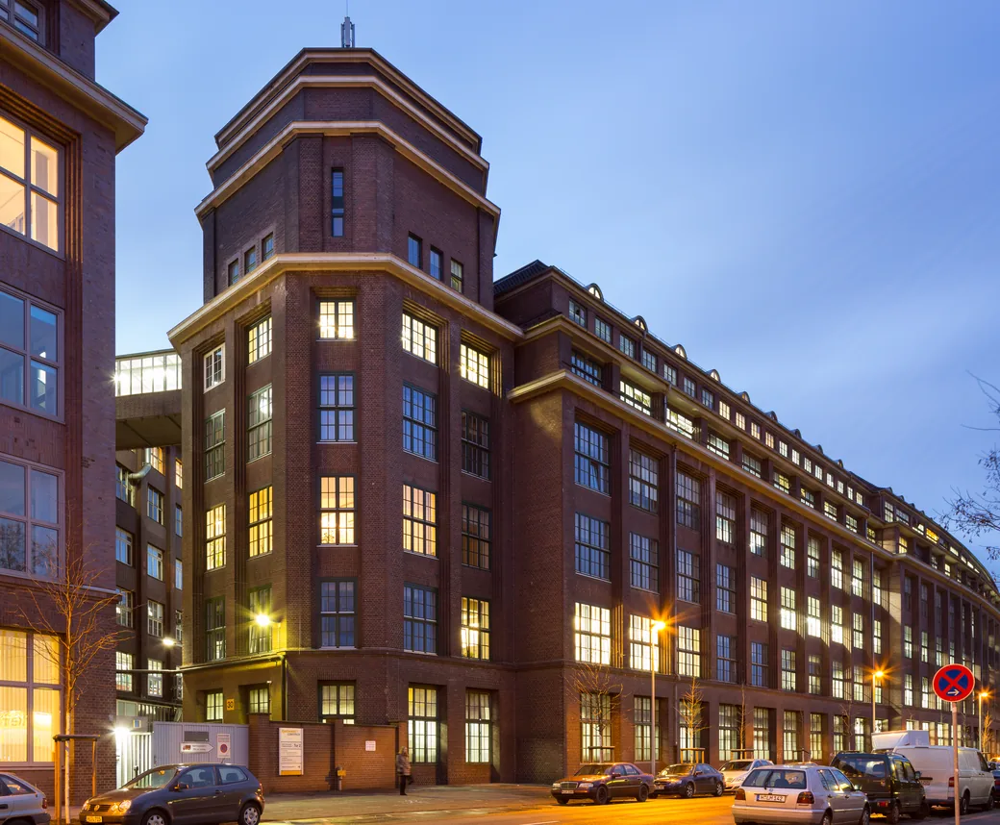

Haushaltshilfe & Alltagshilfe in Hannover-Vahrenwald
Zuverlässige Unterstützung im Haushalt und Alltag in Hannover-Vahrenwald – für Menschen mit Pflegegrad 1–5, direkt über die Pflegekasse abrechenbar.
Ihre Alltagshilfe in Hannover-Vahrenwald
Hannover-Vahrenwald ist urbaner Stadtteil im Norden mit guter Nahversorgung. Genau hier unterstützen wir Menschen dabei, sicher und selbstständig in den eigenen vier Wänden zu leben.
Vahrenwald entlang der Vahrenwalder Straße ist urban und gut versorgt – das traditionsreiche Continental-Areal prägt den Stadtteil bis heute. In den Mehrfamilienhäusern leben viele Menschen, die Hilfe im Haushalt und bei Besorgungen gut gebrauchen können.
Ob rund um Vahrenwalder Straße, Mecklenheide oder Continental-Areal – unsere Haushaltshilfe kommt zu Ihnen nach Hause. Auch in List und Hainholz sind wir regelmäßig unterwegs. Wir übernehmen die Hausarbeit, begleiten Sie zu Terminen und schenken Ihnen Zeit und Aufmerksamkeit.
- Feste, vertraute Betreuungskraft in Hannover-Vahrenwald
- Kurzfristige Termine dank kurzer Wege
- Abrechnung direkt über die Pflegekasse

Womit wir Sie in Hannover-Vahrenwald unterstützen
Von der Reinigung bis zur Begleitung – alles aus einer Hand, abgestimmt auf Ihren Alltag.
Reinigung & Hauswirtschaft
Wir halten Ihr Zuhause sauber: Staubwischen, Boden, Bad, Küche, Müll und Ordnung im Wohnbereich.
Begleitung zu Terminen
Ob Facharzt, Behördengang oder Friseur – wir holen Sie ab, begleiten Sie und bringen Sie sicher wieder heim.
Kochen & Mahlzeiten
Wir planen und kochen ausgewogene Mahlzeiten nach Ihren Wünschen und achten auf besondere Ernährung.
Einkäufe & Besorgungen
Einkaufsliste, Supermarkt, Apotheke und Post – wir übernehmen Ihre Besorgungen zuverlässig.
Gesellschaft & Gespräche
Wir nehmen uns Zeit für Sie: für Gespräche, Kartenspiele, Vorlesen und gemeinsame Momente.
Spaziergänge & Aktivitäten
Spaziergänge im Viertel, kleine Ausflüge oder Bewegung im Garten – wir halten Sie in Bewegung.
Über die Pflegekasse abrechnen
Mit einem anerkannten Pflegegrad ist unsere Hilfe in Hannover-Vahrenwald häufig ohne Eigenanteil möglich.
- Entlastungsbetrag: 131 € pro Monat für Pflegegrad 1–5 (§ 45b SGB XI)
- Verhinderungspflege: Ersatz, wenn pflegende Angehörige einmal ausfallen
- Direktabrechnung: Wir übernehmen den Papierkram mit Ihrer Kasse
Haushaltshilfe in Hannover-Vahrenwald
Sind Sie auch wirklich in Hannover-Vahrenwald im Einsatz?
Kann ich die Haushaltshilfe in Hannover-Vahrenwald über die Pflegekasse abrechnen?
Bekomme ich in Hannover-Vahrenwald eine feste Betreuungskraft?
Auch in der Umgebung von Hannover-Vahrenwald
Wir sind in der gesamten Region Hannover aktiv. Diese Orte in Ihrer Nähe könnten Sie interessieren:
So geht es in Hannover-Vahrenwald weiter
Jetzt kostenlos & unverbindlich anfragen
Lassen Sie sich persönlich beraten. Wir melden uns in der Regel innerhalb von 24 Stunden und besprechen gemeinsam, wie wir Sie unterstützen können.
05031 9602908- 100 % kostenlos & unverbindlich
- Antwort in der Regel innerhalb von 24 Stunden
- Persönliche Beratung zu Pflegegrad & Kosten
- Bahnhofstraße 85, 31515 Wunstorf